Nuestro trabajo
Sombreretes, cañones y piezas en plancha galvanizada, esmaltada y acero inoxidable. Todo sale del taller de Lord Cochrane, en la medida que necesite tu instalación.
Las medidas se hacen a pedido
Lo que ves acá son los tipos de pieza que fabricamos, no un listado cerrado. Si tu cañón es de una medida rara, o necesitas una pieza que no aparece, igual conviene preguntar: casi todo se puede hacer.
01 — Cocinas a leña
Hechas desde
la plancha plana
Acá no se arman con piezas compradas: se fabrican completas en el taller. Horno, placa, cajones, puertas y tiradores salen todos de acá. Somos los únicos en Loncoche que las hacen desde cero.
-
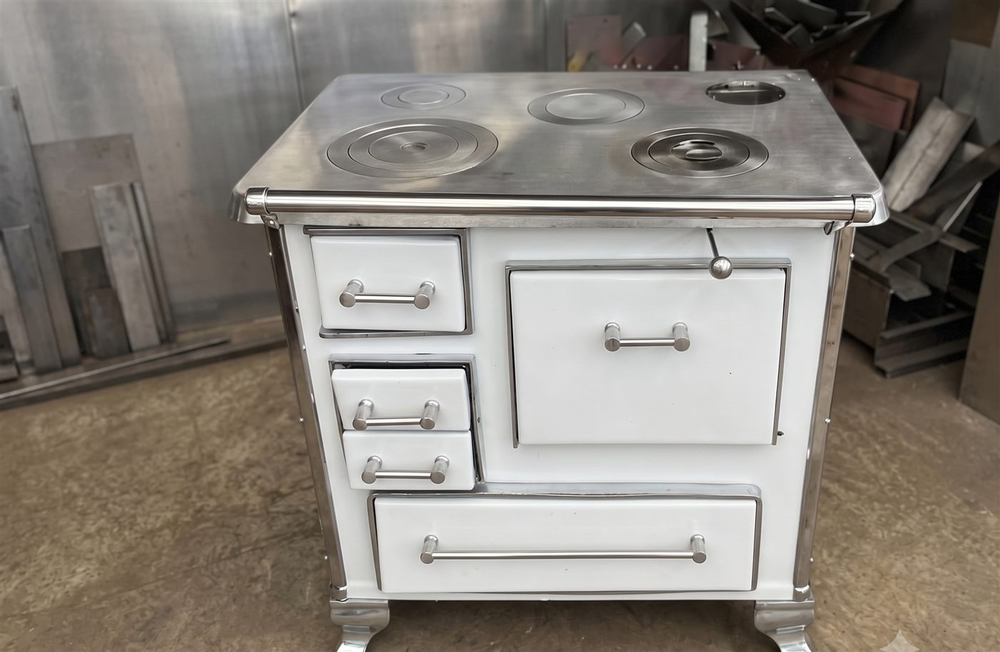
Esmaltada blanca
Tres discos, horno y cajonera. La terminación blanca se lleva bien con cocinas claras y no pide mantención cada temporada.
-
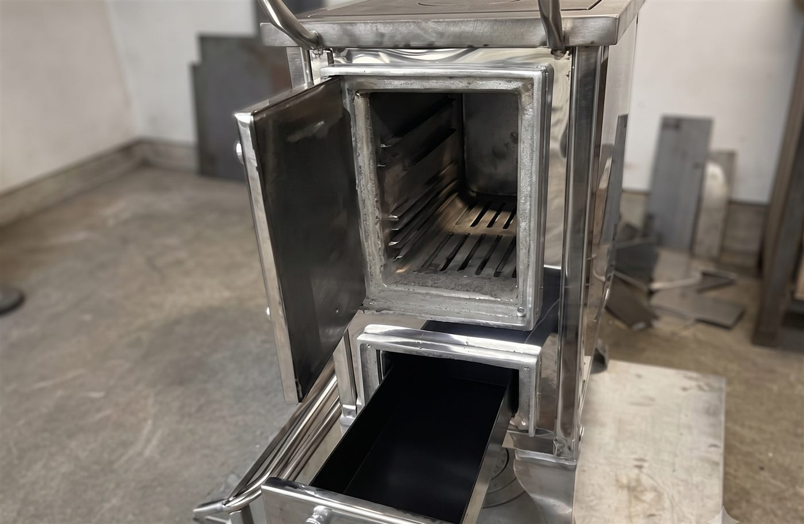
Inoxidable
Toda en acero inoxidable, con horno de parrillas y cenicero. Es la que aguanta mejor el uso diario y la limpieza fuerte.
-
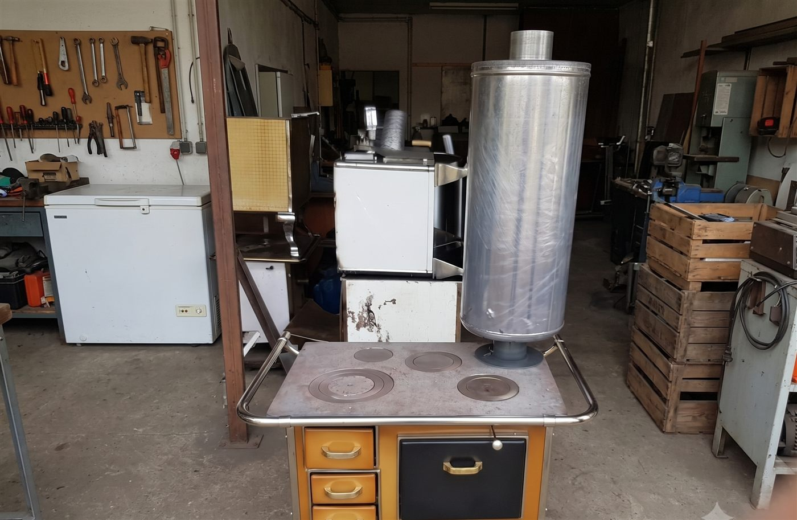
Con frente de madera
El mismo cuerpo, con la madera al frente y los tiradores a la vista. Sale con su cañón armado si se pide junto.
-
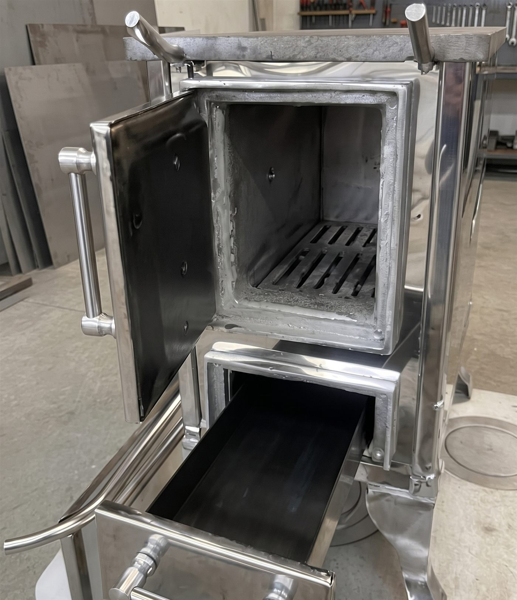
Por dentro
Así queda el horno y el cajón de la ceniza. Todo se puede sacar para limpiar, y las piezas se reponen acá mismo si algún día se gastan.
¿Tienes otra idea?
No hace falta que sea igual a ninguna de estas. Si llegas con una foto, un dibujo o la medida del hueco donde va, se conversa y se ve cómo hacerla. Eso es lo que significa fabricar desde cero.
02 — Sombreretes
Los gorros
del cañón
Van arriba de todo y hacen dos cosas: que el tiro funcione y que no entre agua ni viento por la salida del techo. Cambian según el techo, el viento del lugar y qué tanto se vea desde afuera.
-
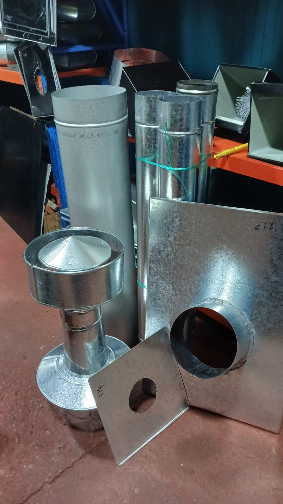
De copa
El clásico galvanizado. Tapa la lluvia por arriba y deja salir el humo por el contorno. Es el que más se pide.
-
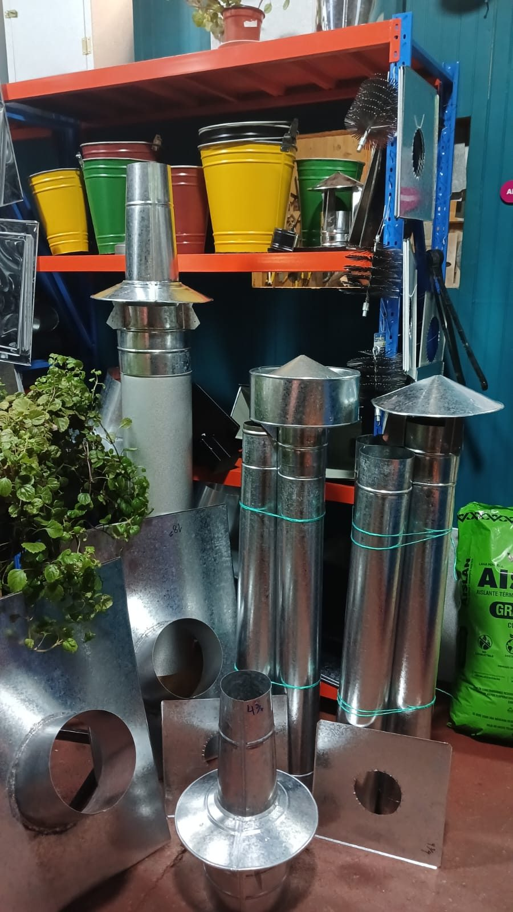
Cónico
Techo en punta sobre patas. Bota mejor el agua en zonas de lluvia fuerte, que es casi todo el año por acá.
-
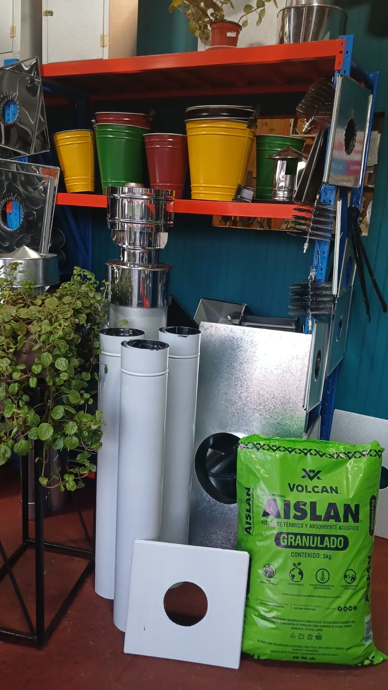
Inoxidable
Para el que queda a la vista y no se quiere repintar nunca más. Aguanta la intemperie sin picarse.
-
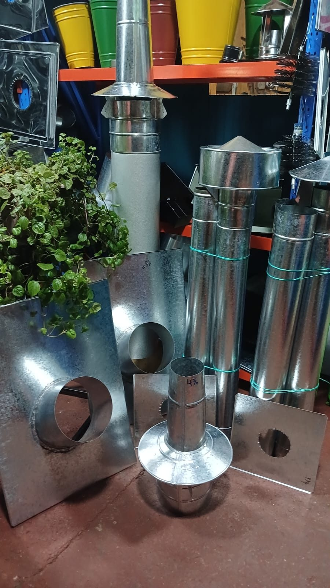
De láminas
El de las tapas escalonadas que se ve en el video de arriba. Corta el viento sin ahogar el tiro. Se hace a pedido.
Así se arma uno. La pieza se va calzando y remachando en el banco, sin moldes: por eso puede salir en la medida que haga falta.
03 — Cañones y tubos
Tres materiales,
según dónde vaya
El tubo que sube por dentro de la casa no tiene por qué ser el mismo que sale al techo. Cambia el material según lo que se vea y cuánta intemperie aguante.
-

Galvanizado
El de siempre. Resistente, económico y en cualquier diámetro. Es lo que lleva la mayoría de las instalaciones.
-
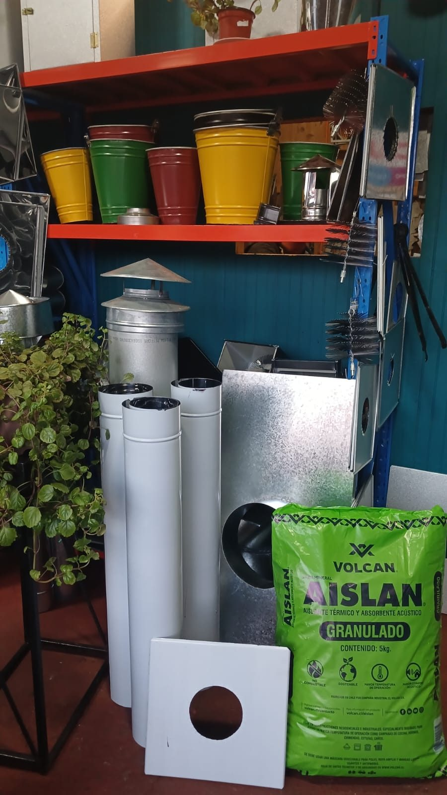
Esmaltado blanco
Para el tramo que queda dentro de la casa. Se ve limpio contra el cielo raso y no pide pintarlo cada temporada.
-
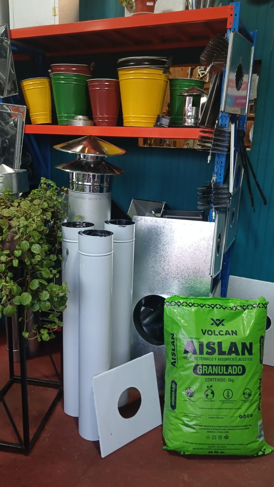
Conjunto armado
Cañón, codo, pasamuro y sombrerete de una sola vez, calzados entre sí. Sale mejor que juntar piezas de distinta procedencia.
04 — Uniones y piezas
Lo que arma
el recorrido
Un cañón casi nunca sube derecho. Estas son las piezas que le dan la vuelta, lo dejan pasar por el muro y permiten limpiarlo después.
-
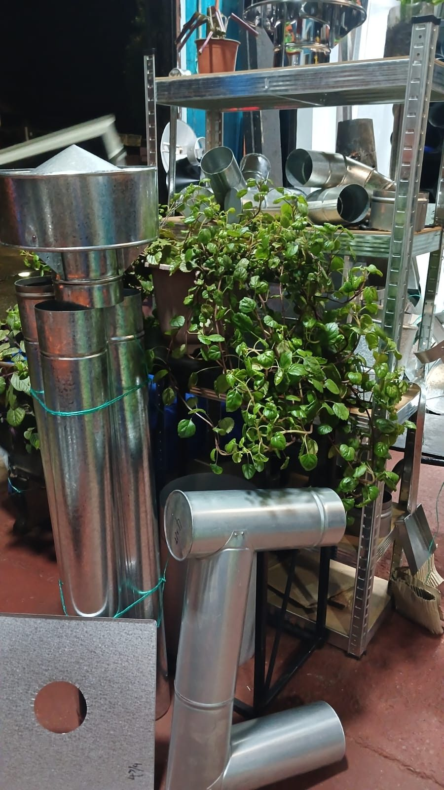
T con registro
La pieza en T con tapa: por ahí se limpia el hollín sin tener que desarmar toda la instalación.
-
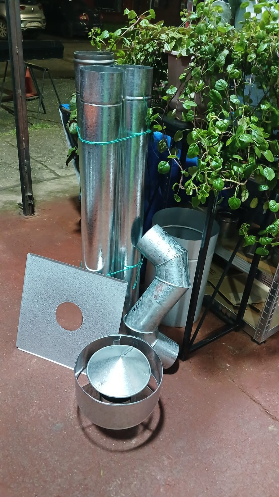
Codos y reducciones
Para esquivar una viga o pasar de un diámetro a otro cuando la estufa y el cañón existente no coinciden.
-
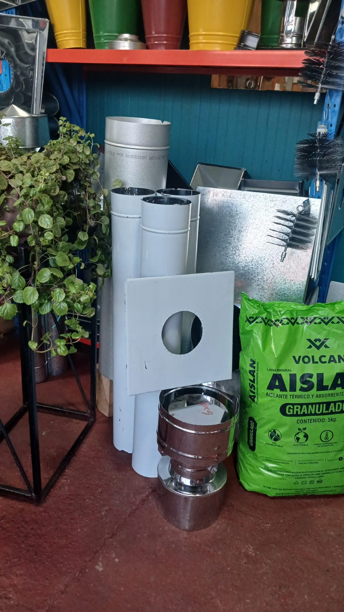
Pasamuros
La placa que sella donde el cañón cruza el muro o la techumbre. Se corta al diámetro exacto del tubo.
05 — Accesorios
Lo que se lleva
en la misma vuelta
-

Tarros y tambores
Pintados en amarillo, verde y rojo. Sirven de basurero, de leñero o de macetero, que es para lo que terminan usándose casi siempre.
-
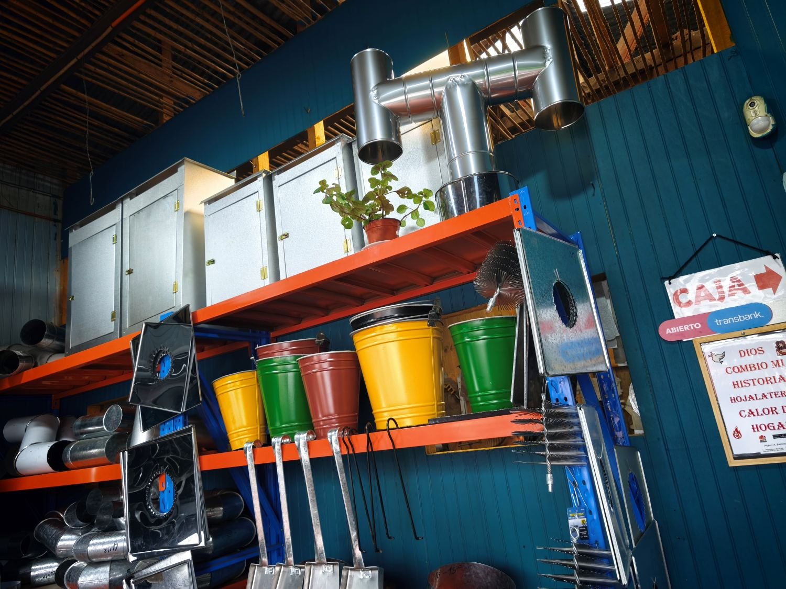
Palas y escobillas
Palas para la ceniza, hechas acá mismo, y escobillas para limpiar el cañón por dentro sin desarmar la instalación.
-
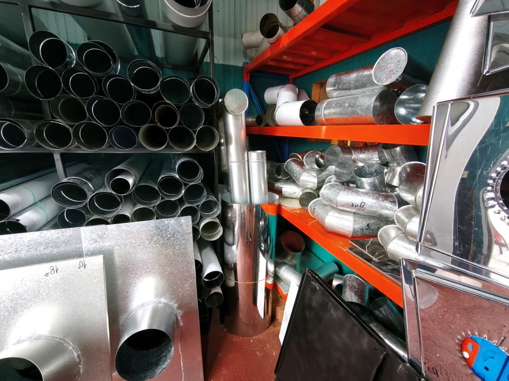
Aislante y plancha suelta
Lana mineral en sacos para el paso por techumbre, y plancha cortada a la medida si prefieres armar tú mismo.
06 — Dónde
Todo esto está
en el local
Lo que ves en el catálogo no es un depósito lejano: está a la vista en Lord Cochrane 121, y se puede mirar y medir antes de llevarlo.
-
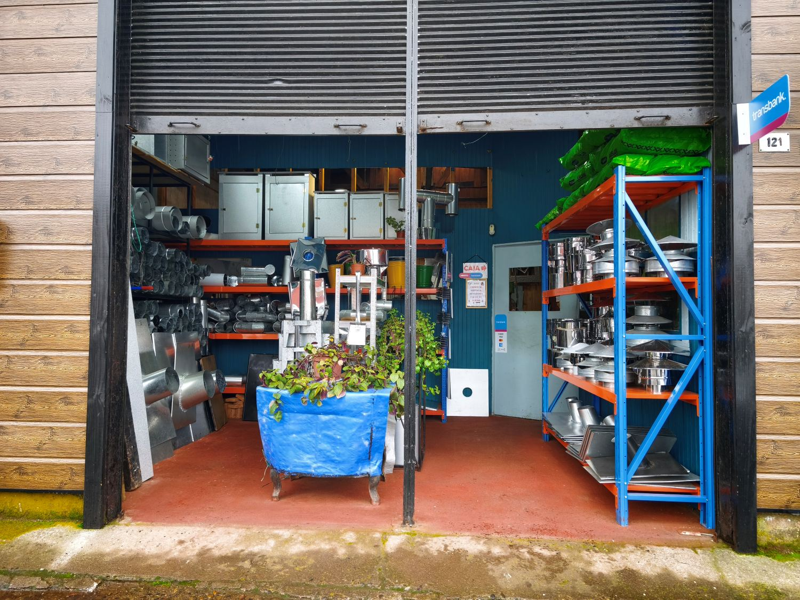
La entrada
Lord Cochrane 121. Con la cortina arriba se ve el local completo desde la vereda.
-
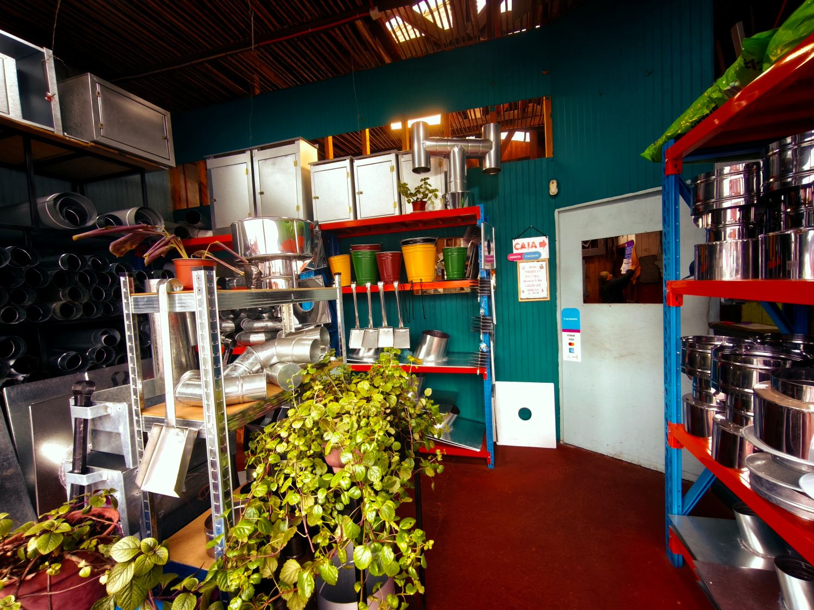
El mostrador
Acá se atiende. Se paga en efectivo, con débito o crédito, y hay Caja Vecina en el mismo local.
-
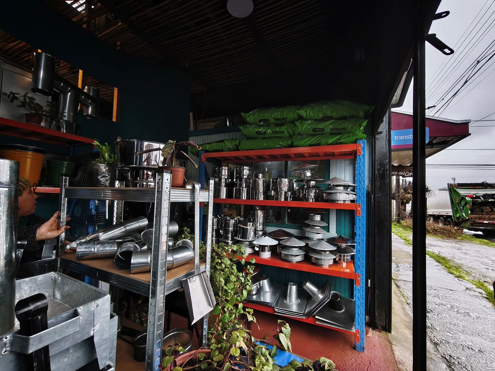
La exhibición
Buena parte del stock queda hacia la calle: se alcanza a ver qué hay antes de entrar.
¿No encuentras
tu medida?
Mándanos una foto de lo que tienes y la medida aproximada. Con eso alcanza para decirte precio y en cuánto lo tenemos.
Consultar por WhatsApp